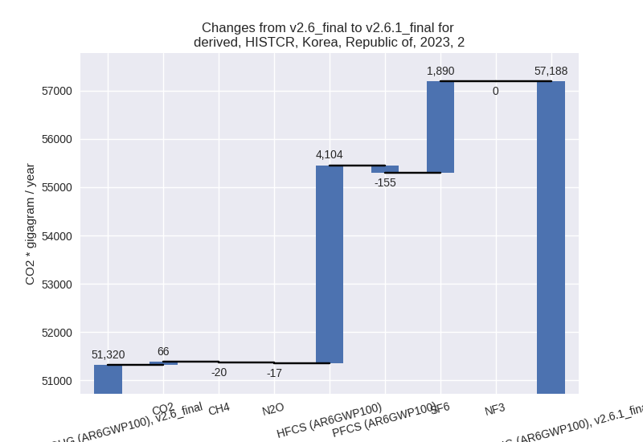

Changes in PRIMAP-hist v2.6.1_final compared to v2.6_final for Korea, Republic of
2025-03-19
Johannes Gütschow
Change analysis for Korea, Republic of for PRIMAP-hist v2.6.1_final compared to v2.6_final
Overview over emissions by sector and gas
The following figures show the aggregate national total emissions excluding LULUCF AR6GWP100 for the country reported priority scenario. The dotted linesshow the v2.6_final data.
The following figures show the aggregate national total emissions excluding LULUCF AR6GWP100 for the third party priority scenario. The dotted linesshow the v2.6_final data.
Overview over changes
In the country reported priority scenario we have the following changes for aggregate Kyoto GHG and national total emissions excluding LULUCF (M.0.EL):
- Emissions in 2023 have changed by 0.8%% (5551.28 Gg CO2 / year)
- Emissions in 1990-2023 have changed by 0.0%% (7.27 Gg CO2 / year)
In the third party priority scenario we have the following changes for aggregate Kyoto GHG and national total emissions excluding LULUCF (M.0.EL):
- Emissions in 2023 have changed by -2.3%% (-16470.39 Gg CO2 / year)
- Emissions in 1990-2023 have changed by -1.2%% (-6927.53 Gg CO2 / year)
Most important changes per scenario and time frame
In the country reported priority scenario the following sector-gas combinations have the highest absolute impact on national total KyotoGHG (AR6GWP100) emissions in 2023 (top 5):
- 1: 2, HFCS (AR6GWP100) with 4103.54 Gg CO2 / year (51.9%)
- 2: 2, SF6 with 1890.15 Gg CO2 / year (46.6%)
- 3: 3.A, CH4 with -445.23 Gg CO2 / year (-5.0%)
- 4: 5, N2O with -342.81 Gg CO2 / year (-23.0%)
- 5: 3.A, N2O with -310.36 Gg CO2 / year (-8.2%)
In the country reported priority scenario the following sector-gas combinations have the highest absolute impact on national total KyotoGHG (AR6GWP100) emissions in 1990-2023 (top 5):
- 1: 5, N2O with -276.08 Gg CO2 / year (-16.7%)
- 2: 2, HFCS (AR6GWP100) with 202.78 Gg CO2 / year (2.3%)
- 3: 2, SF6 with 86.52 Gg CO2 / year (1.7%)
- 4: 3.A, CH4 with -15.92 Gg CO2 / year (-0.2%)
- 5: 1.A, N2O with -14.82 Gg CO2 / year (-0.8%)
In the third party priority scenario the following sector-gas combinations have the highest absolute impact on national total KyotoGHG (AR6GWP100) emissions in 2023 (top 5):
- 1: 4, CH4 with -10159.01 Gg CO2 / year (-34.2%)
- 2: 1.B.1, CO2 with -4210.39 Gg CO2 / year (-34.4%)
- 3: 2, CO2 with -1113.01 Gg CO2 / year (-1.9%)
- 4: 1.A, N2O with 1000.37 Gg CO2 / year (25.7%)
- 5: 2, SF6 with -821.90 Gg CO2 / year (-7.2%)
In the third party priority scenario the following sector-gas combinations have the highest absolute impact on national total KyotoGHG (AR6GWP100) emissions in 1990-2023 (top 5):
- 1: 4, CH4 with -7315.04 Gg CO2 / year (-36.0%)
- 2: 1.A, N2O with 809.69 Gg CO2 / year (22.1%)
- 3: 5, N2O with -276.08 Gg CO2 / year (-16.7%)
- 4: 1.B.1, CO2 with -209.87 Gg CO2 / year (-2.7%)
- 5: 1.B.2, CO2 with 78.47 Gg CO2 / year (1934.4%)
Notes on data changes
Here we list notes explaining important emissions changes for the country.
- No new country reported data has been included. Changes in the CR time-series are mostly small and come from updated third party data (EDGAR, FAO) which is used to extrapolate the country reported data. The most important changes are higher emissions for HFCs and SF6 in 2022 and 2023,because the new EDGAR data shows a continuing upward trend after 2020 while numerical methods continued the downward trend before 2020.
- In the TP scenario the main change is that waste cH4 emissions are much lower in the new EDGAR data. Further changes come from CO2 in 1.B.1, 2.B, 2.C, 2.D, N2O in1.A and more sectors. All from changes in EDGAR data.
Changes by sector and gas
For each scenario and time frame the changes are displayed for all individual sectors and all individual gases. In the sector plot we use aggregate Kyoto GHGs in AR6GWP100. In the gas plot we usenational total emissions without LULUCF.
country reported scenario
2023
1990-2023
third party scenario
2023
1990-2023

Detailed changes for the scenarios:
country reported scenario (HISTCR):
Most important changes per time frame
For 2023 the following sector-gas combinations have the highest absolute impact on national total KyotoGHG (AR6GWP100) emissions in 2023 (top 5):
- 1: 2, HFCS (AR6GWP100) with 4103.54 Gg CO2 / year (51.9%)
- 2: 2, SF6 with 1890.15 Gg CO2 / year (46.6%)
- 3: 3.A, CH4 with -445.23 Gg CO2 / year (-5.0%)
- 4: 5, N2O with -342.81 Gg CO2 / year (-23.0%)
- 5: 3.A, N2O with -310.36 Gg CO2 / year (-8.2%)
For 1990-2023 the following sector-gas combinations have the highest absolute impact on national total KyotoGHG (AR6GWP100) emissions in 1990-2023 (top 5):
- 1: 5, N2O with -276.08 Gg CO2 / year (-16.7%)
- 2: 2, HFCS (AR6GWP100) with 202.78 Gg CO2 / year (2.3%)
- 3: 2, SF6 with 86.52 Gg CO2 / year (1.7%)
- 4: 3.A, CH4 with -15.92 Gg CO2 / year (-0.2%)
- 5: 1.A, N2O with -14.82 Gg CO2 / year (-0.8%)
Changes in the main sectors for aggregate KyotoGHG (AR6GWP100) are
- 1: Total sectoral emissions in 2022 are 579705.39 Gg CO2 / year which is 85.1% of M.0.EL emissions. 2023 Emissions have changed by 0.0% (10.22 Gg CO2 / year). 1990-2023 Emissions have changed by -0.0% (-3.95 Gg CO2 / year).
- 2: Total sectoral emissions in 2022 are 56830.04 Gg
CO2 / year which is 8.3% of M.0.EL emissions. 2023 Emissions have
changed by 11.4% (5867.69 Gg CO2 /
year). 1990-2023 Emissions have changed by 0.5% (283.57 Gg CO2 / year). For 2023 the
changes per gas
are:
 - M.AG: Total sectoral emissions in 2022 are 24552.78 Gg CO2 / year which is 3.6% of M.0.EL emissions. 2023 Emissions have changed by -1.9% (-456.44 Gg CO2 / year). 1990-2023 Emissions have changed by -0.1% (-13.63 Gg CO2 / year).
- 4: Total sectoral emissions in 2022 are 18907.82 Gg
CO2 / year which is 2.8% of M.0.EL emissions. 2023 Emissions have
changed by 2.6% (472.62 Gg CO2 /
year). 1990-2023 Emissions have changed by 0.1% (17.36 Gg CO2 / year). For 2023 the
changes per gas
are:
- 5: Total sectoral emissions in 2022 are 1176.50 Gg
CO2 / year which is 0.2% of M.0.EL emissions. 2023 Emissions have
changed by -23.0% (-342.81 Gg CO2 /
year). 1990-2023 Emissions have changed by -16.7% (-276.08 Gg CO2 / year). For 2023
the changes per gas
are:
For 1990-2023 the changes per gas are:
third party scenario (HISTTP):
Most important changes per time frame
For 2023 the following sector-gas combinations have the highest absolute impact on national total KyotoGHG (AR6GWP100) emissions in 2023 (top 5):
- 1: 4, CH4 with -10159.01 Gg CO2 / year (-34.2%)
- 2: 1.B.1, CO2 with -4210.39 Gg CO2 / year (-34.4%)
- 3: 2, CO2 with -1113.01 Gg CO2 / year (-1.9%)
- 4: 1.A, N2O with 1000.37 Gg CO2 / year (25.7%)
- 5: 2, SF6 with -821.90 Gg CO2 / year (-7.2%)
For 1990-2023 the following sector-gas combinations have the highest absolute impact on national total KyotoGHG (AR6GWP100) emissions in 1990-2023 (top 5):
- 1: 4, CH4 with -7315.04 Gg CO2 / year (-36.0%)
- 2: 1.A, N2O with 809.69 Gg CO2 / year (22.1%)
- 3: 5, N2O with -276.08 Gg CO2 / year (-16.7%)
- 4: 1.B.1, CO2 with -209.87 Gg CO2 / year (-2.7%)
- 5: 1.B.2, CO2 with 78.47 Gg CO2 / year (1934.4%)
Changes in the main sectors for aggregate KyotoGHG (AR6GWP100) are
- 1: Total sectoral emissions in 2022 are 589576.75 Gg CO2 / year which is 82.5% of M.0.EL emissions. 2023 Emissions have changed by -0.5% (-3087.65 Gg CO2 / year). 1990-2023 Emissions have changed by 0.1% (671.29 Gg CO2 / year).
- 2: Total sectoral emissions in 2022 are 84870.57 Gg
CO2 / year which is 11.9% of M.0.EL emissions. 2023 Emissions have
changed by -2.7% (-2393.03 Gg CO2 /
year). 1990-2023 Emissions have changed by -0.0% (-5.92 Gg CO2 / year). For 2023 the
changes per gas
are:
- M.AG: Total sectoral emissions in 2022 are 16299.28
Gg CO2 / year which is 2.3% of M.0.EL emissions. 2023 Emissions have
changed by -2.7% (-450.48 Gg CO2 /
year). 1990-2023 Emissions have changed by 0.0% (1.66 Gg CO2 / year). For 2023 the
changes per gas
are:
The changes come from the following subsectors:- 3.A: Total sectoral emissions in 2022 are 7806.48
Gg CO2 / year which is 47.9% of category M.AG emissions. 2023 Emissions
have changed by -6.2% (-508.47 Gg
CO2 / year). 1990-2023 Emissions have changed by -0.3% (-19.88 Gg CO2 / year). For 2023 the
changes per gas
are:
There is no subsector information available in PRIMAP-hist. - M.AG.ELV: Total sectoral emissions in 2022 are 8492.80 Gg CO2 / year which is 52.1% of category M.AG emissions. 2023 Emissions have changed by 0.7% (57.99 Gg CO2 / year). 1990-2023 Emissions have changed by 0.2% (21.54 Gg CO2 / year).
- 3.A: Total sectoral emissions in 2022 are 7806.48
Gg CO2 / year which is 47.9% of category M.AG emissions. 2023 Emissions
have changed by -6.2% (-508.47 Gg
CO2 / year). 1990-2023 Emissions have changed by -0.3% (-19.88 Gg CO2 / year). For 2023 the
changes per gas
are:
- 4: Total sectoral emissions in 2022 are 22671.75 Gg
CO2 / year which is 3.2% of M.0.EL emissions. 2023 Emissions have
changed by -31.3% (-10196.42 Gg CO2
/ year). 1990-2023 Emissions have changed by -32.3% (-7318.49 Gg CO2 / year). For 2023
the changes per gas
are:
For 1990-2023 the changes per gas are: - 5: Total sectoral emissions in 2022 are 1176.50 Gg
CO2 / year which is 0.2% of M.0.EL emissions. 2023 Emissions have
changed by -23.0% (-342.81 Gg CO2 /
year). 1990-2023 Emissions have changed by -16.7% (-276.08 Gg CO2 / year). For 2023
the changes per gas
are:
For 1990-2023 the changes per gas are: